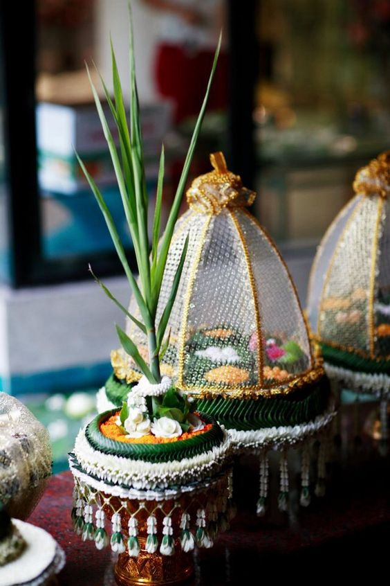
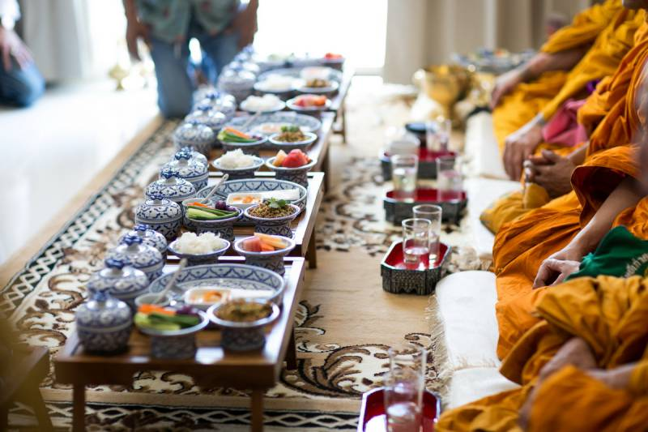
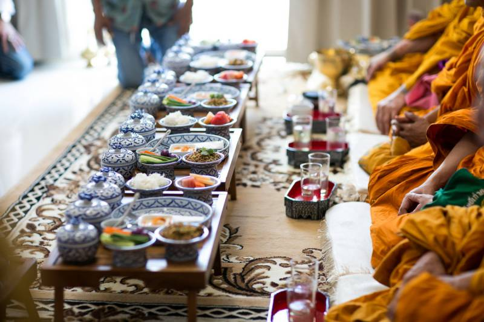

อาหารตามฤดูกาล
การที่ประเทศไทยมีฤดูหลายฤดู ทำให้คนไทยคิดปรุงอาหารที่เหมาะสมกับฤดูกาลขึ้น เช่น ในฤดูร้อน
คนไทยจะนิยมรับประทานข้าวแช่
คือ ข้าวขัดใส่น้ำลอยดอกไม้ ปัจจุบันจะใส่น้ำแข็งด้วย ทำให้รู้สึกหายร้อน
ข้าวแช่รับประทานกับอาหารที่จัดปรุงเป็นพิเศษ
มีเนื้อผัดหวาน กะปิทอด หัวผักกาดเค็มผัดหวาน
ปลาช่อนแห้ง หรือปลายี่สกผัดหวาน พริกหยวกยัดไส้ หอมสอดไส้
รับประทานแนมกับผักสด
ซึ่งสลักสวยงาม มีแตงกวา กระชาย มะม่วง พริกชี้ฟ้า ต้นหอม
ข้าวแช่จะจัดใส่ภาชนะจานเชิงสวยงาม
นอกจากมีรสชาติอร่อยแล้ว ยังเหมาะกับดินฟ้าอากาศอีกด้วย
ระหว่างฤดูฝนซึ่งยาวนานถึง ๖ เดือน คนไทยจะทำอาหารไว้รับประทานในบ้าน ทั้งนี้เนื่องจาก
ฝนตกติดกันนาน ทำให้การเดินทางไปจ่ายของไม่สะดวก
จึงนิยมกวนขนม เช่น ข้าวเหนียวแก้ว
กะละแม ข้าวเหนียวแดง หรือมักจะดองผักและผลไม้ ไว้รับประทานนานๆ
ฤดูหนาว คนไทยจะรับประทานอาหารที่ช่วยให้ร่างกายอบอุ่น เช่น น้ำขิง มันต้มน้ำตาล ไข่หวาน
ถั่วเขียวต้มน้ำตาล และเมื่อนั่งผิงไฟแก้ความหนาว
ก็จะเผามัน เผาเผือก ทำขนมเบื้อง ขนมครก
และข้าวเกรียบปากหม้อรับประทานกัน เป็นต้น
อาหารตามเทศกาลและพิธีต่างๆ
คนไทยนิยมจัดอาหารเฉพาะในพิธีการ และเทศกาลต่างๆ หลักฐานจะพบจากหนังสือวรรณคดีหลายเล่ม
เช่น ขุนช้างขุนแผน
กาพย์เห่ชมเครื่องคาวหวาน กาพย์ห่อโคลงเห่เรือ เป็นต้น ซึ่งจะสะท้อนให้เห็น
ภาพชีวิตในอดีตของคนไทย
อาหารในพิธีต่างๆ เช่น พิธีแต่งงาน จะจัดอาหารคาวหวานที่มีชื่อ หรือลักษณะอาหาร ที่มีความหมายเป็นมงคล
อาหารคาว ได้แก่ ขนมจีน วุ้นเส้น
อาหารหวาน ได้แก่ ฝอยทอง ทองหยิบ ทองเอก ขนมชั้น ขนมถ้วยฟู และขนมกง เป็นต้น
ประเพณีการทำบุญเนื่องในวันสำคัญทางพุทธศาสนา การจัดสำรับเลี้ยงพระเป็นสิ่งที่สำคัญมาก จะต้องจัดเป็นสำรับให้ถูกต้อง ดังตัวอย่างการจัดสำรับอาหารของท่านผู้หญิงเปลี่ยน ภาสกรวงศ์ ในหนังสือแม่ครัวหัวป่า ดังนี้
สำรับคาว มีแกงเผ็ดไก่หรือเนื้อ แกงหองหรือแกงบวน ต้มส้มสับปะรดหรือมังคุด อาจเติมขนมจีนน้ำยาด้วย
สำรับเคียง มีไส้กรอก หมูแนม ยำยวน หรุ่ม พริกสด ปลาแห้งผัด สับปะรดหรือแตงโม สิ่งหนึ่ง หมูย่างจิ้มน้ำพริกเผา หมูหวาน เมี่ยงหมู
สำรับหวาน มีทองหยิบ ฝอยทอง ขนม หม้อแกง ขนมชั้น มะพร้าวแก้ว ขนมถ้วยชักหน้าสีอัญชัน ขนมเทียนใบตองสด ขนมถ้วยฟู ขนมหันตรา ลูกชุบชมพู่ มันสีม่วงกวน ข้าวเหนียวแก้วปั้นก้อนเมล็ดแตงติดหน้า วุ้นหวานทำเป็นผลมะปราง ขนมทองดำ ขนมลืมกลืน และลอยแก้ว ส้มซ่า
อาหารหวานคาวบางชนิดจะทำเฉพาะเทศกาลเท่านั้น เช่น พระราชพิธีกวนข้าวทิพย์ และข้าวยาคูในวันสารท ขนมกระยาสารทตอนสิ้นเดือน ๑๐ ขนมลา และขนมพองของชาวใต้ในวันสารท เช่นกัน นอกจากนั้นก็มีขนมกะละแม ซึ่งในสมัยโบราณจะกวนเฉพาะตอนเทศกาลสงกรานต์เท่านั้น

 
